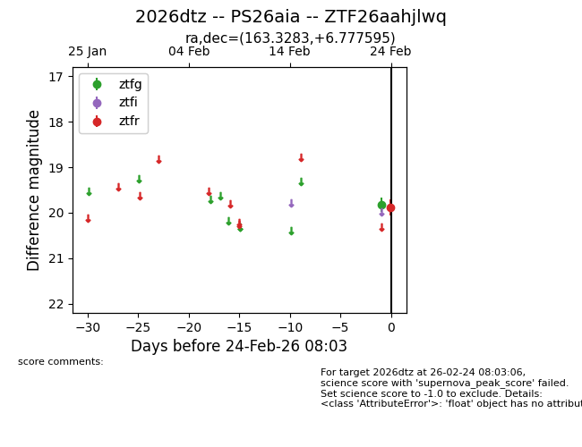
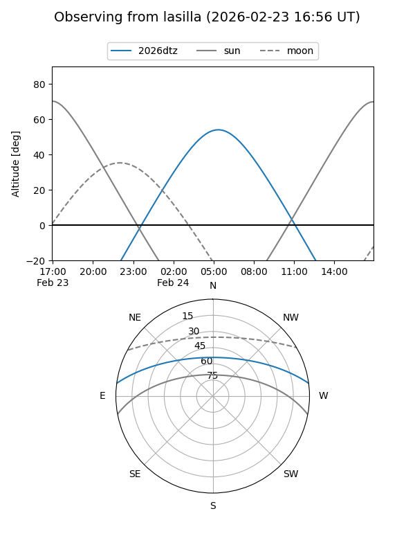
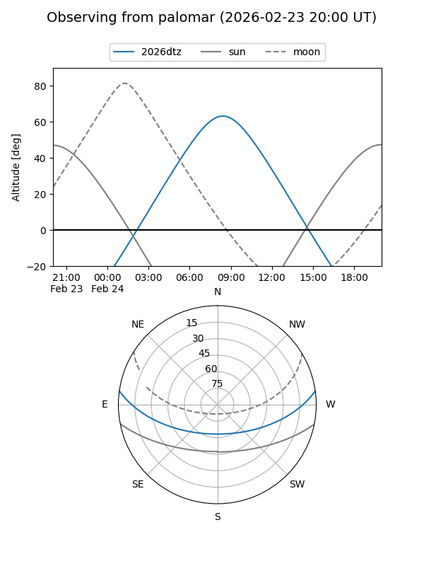

2026dtz
Target 2026dtz at 2026-02-24 09:08
Aliases and brokers:
FINK: link
Lasair: link
ALeRCE: link
TNS: link
YSE: link
alt names
ZTF26aahjlwq (ztf,fink_ztf)
2026dtz (tns,yse)
PS26aia (panstarrs)
Coordinates:
equatorial (ra, dec) = 163.3283,+6.77759
equatorial (HMS+DMS) = 10:53:18.80,+06:46:39.34
galactic (l, b) = (243.4868,+55.36301)
Flags:
Photometry:
last ztfg=19.83, ztfr=19.88
1 ztfg, 1 ztfr detections
Lightcurve

Visibility


Additional plots